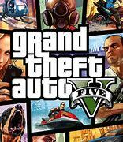

God of War (2018) - Es un juego de acción y aventura desarrollado por Santa Monica Studio y publicado por Sony Interactive Entertainment.
es una reinvención de la saga que sigue a Kratos, ahora en el mundo de la mitología nórdica, mientras busca cumplir la última voluntad de su esposa:
esparcir sus cenizas en la cima de la montaña más alta de los reinos. En este viaje lo acompaña su hijo, Atreus, lo que introduce una dinámica profundamente
emocional y de crecimiento personal para Kratos. Lo que hace que este juego sea tan especial es la evolución de Kratos como personaje. Ya no es solo un dios
de la guerra lleno de rabia, sino un padre que lucha por reconectar con su humanidad y ser una mejor figura para su hijo. El combate es visceral y satisfactorio,
con el hacha Leviatán aportando una nueva dimensión a las batallas. Pero lo que realmente destaca es la profundidad emocional y la relación entre Kratos y Atreus,
que añade un nivel de humanidad a la saga nunca antes visto.Me gusta jugar God of War (2018) porque, además de la excelente jugabilidad y las batallas épicas,
la historia tiene un peso emocional que te atrapa. Te sumerges en la lucha de Kratos por dejar atrás su oscuro pasado y ser un mejor padre, lo que le da al juego
una sensación de madurez y profundidad pocas veces vista en juegos de acción.
GTA V - Es un juego de acción y aventura desarrollado por Rockstar North y publicado por Rockstar Games, es de los videojuegos favoritos de muchos,
no por nada es uno de los videojuegos mas vendidos del mundo. es un juego de mundo abierto que sigue las historias entrelazadas de tres protagonistas: Michael, un
exladrón de bancos que busca una vida tranquila; Trevor, un criminal impredecible y violento; y Franklin, un joven que busca ascender en el mundo del crimen. Situado
en la ciudad ficticia de Los Santos, inspirada en Los Ángeles, GTA V ofrece una experiencia de libertad total, donde los jugadores pueden realizar misiones de historia
, cometer crímenes, conducir vehículos o simplemente explorar el vasto mundo abierto.Lo que me gusta de GTA V es su inmenso mundo lleno de detalles y posibilidades.
Los Santos se siente como una ciudad viva, y la variedad de actividades te permite hacer desde asaltos a bancos hasta volar aviones o simplemente pasear por la ciudad.
Además, la narrativa es única, con personajes complejos y un humor oscuro que critica la cultura moderna. El multijugador (GTA Online) añade una capa extra de
diversión, con la posibilidad de crear tu propio imperio criminal junto a amigos.

Uncharted 4 - Es un juego de acción y aventura desarrollado por Naughty Dog y publicado por Sony Computer Entertainment.sigue a Nathan Drake, un
cazador de tesoros retirado que es obligado a volver al mundo de la aventura cuando su hermano, Sam, reaparece buscando ayuda para encontrar el legendario tesoro del
pirata Henry Avery. El juego combina intensas escenas de acción, puzzles ingeniosos y una narrativa cinematográfica que explora temas como la familia, el sacrificio y
el legado. Lo que me gusta de Uncharted 4 es su mezcla perfecta de historia, acción y exploración. Los paisajes son impresionantes, desde selvas tropicales hasta
antiguas ciudades perdidas, lo que hace que cada momento se sienta épico. Los personajes están muy bien desarrollados, y la relación entre Nathan y su hermano Sam
añade un toque emocional que te hace sentir realmente conectado con la historia. Además, las secuencias de acción son como una película de aventuras, llenas de
adrenalina y sorpresas. Es un juego que equilibra muy bien la narrativa con la diversión pura de explorar y descubrir.